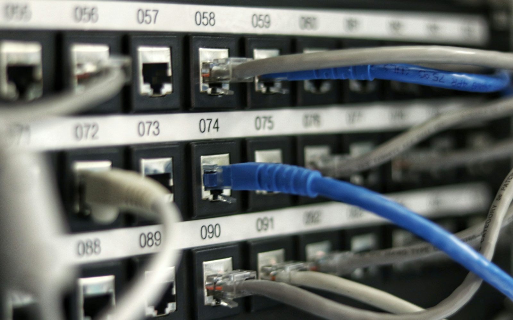
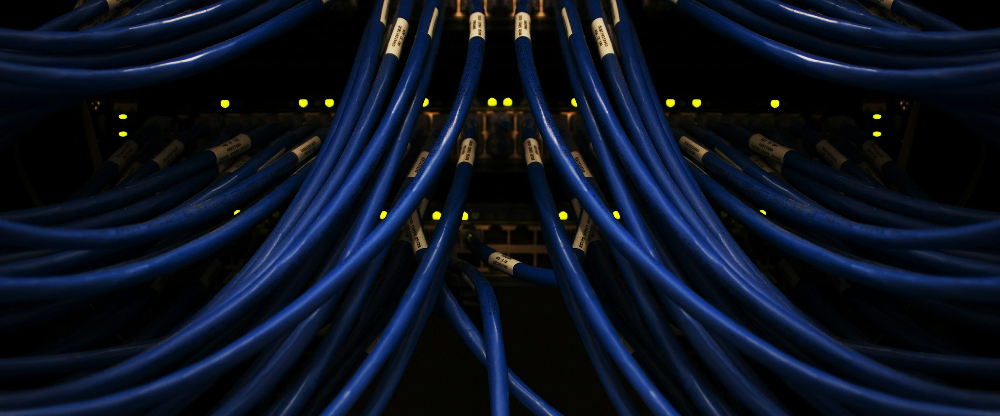

IN PLAIN ENGLISH
Network Architects & Engineers
A network diagram can look clean while the rack tells a different story. RackTrack helps engineers see the physical side of topology: which device is in the cabinet, which ports appear active, and which visible cable paths need review.

Topology drift starts at the physical layer.
A change window approaches, but the team is not fully sure whether the patch map, switch record, and cable reality still agree.
RackTrack captures the real cabinet.
RackTrack captures switch faces, patch panels, labels, visible uplinks, LEDs, and cable paths from the cabinet view.
The team gets a record it can use.
Engineers can spot mismatches before the window, walk to the right rack, and update topology from evidence instead of guesswork.

WHAT THE TEAM SEES
Clear rack evidence, not another mystery report.
- A physical check against the logical diagram.
- Port and cable context tied back to rack images.
- A faster way to find uplink or patching drift.
DECISIONS MADE EASIER
A cleaner core switch migration.
Use one cabinet to compare your expected topology with the physical path in front of the team.
START SMALL